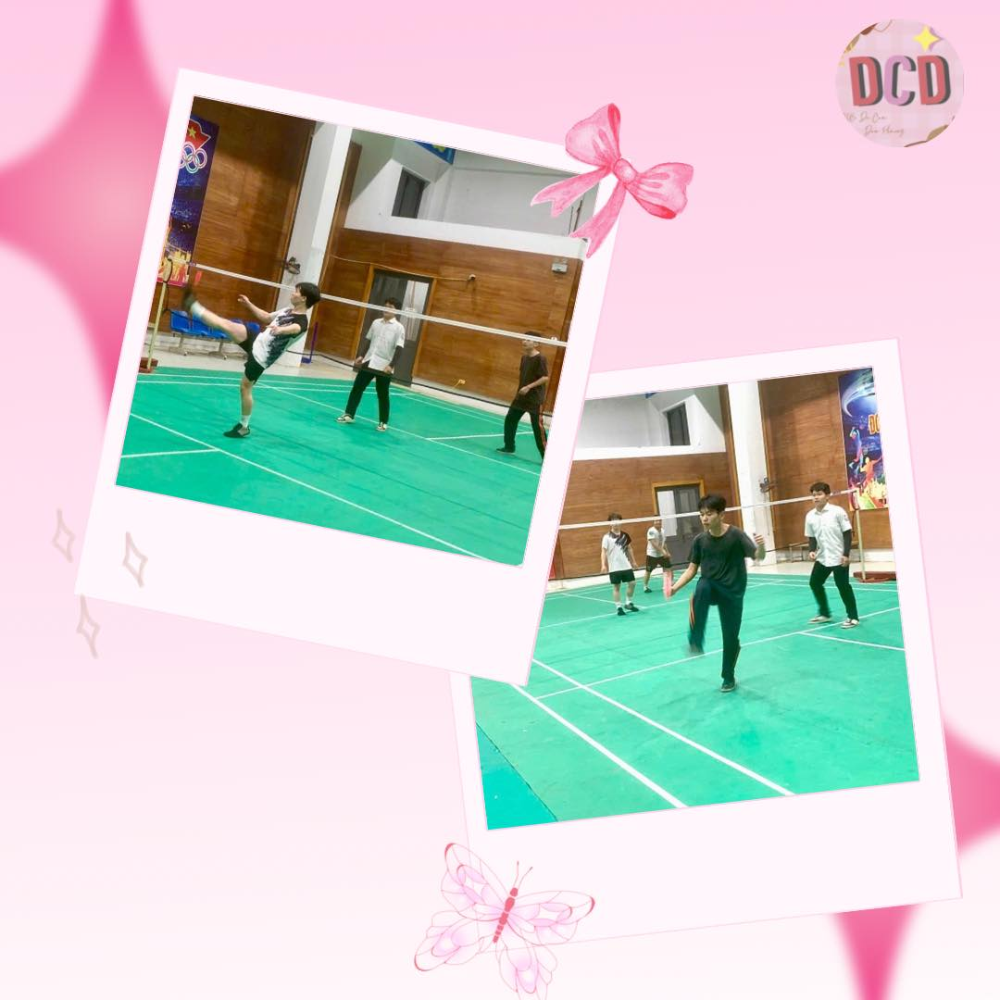
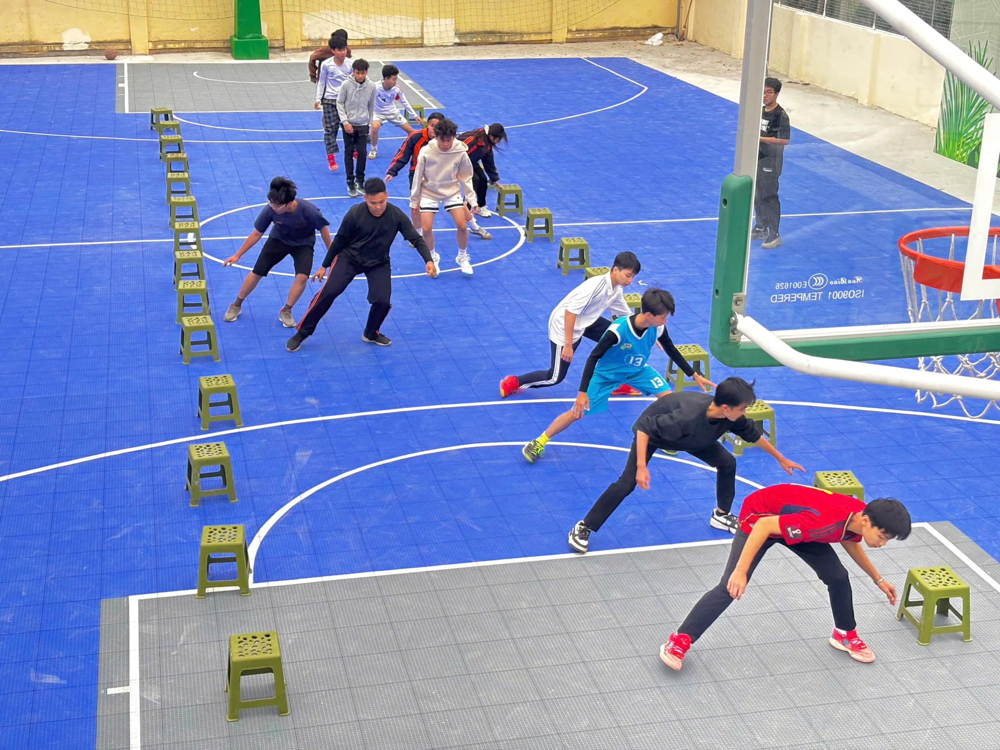
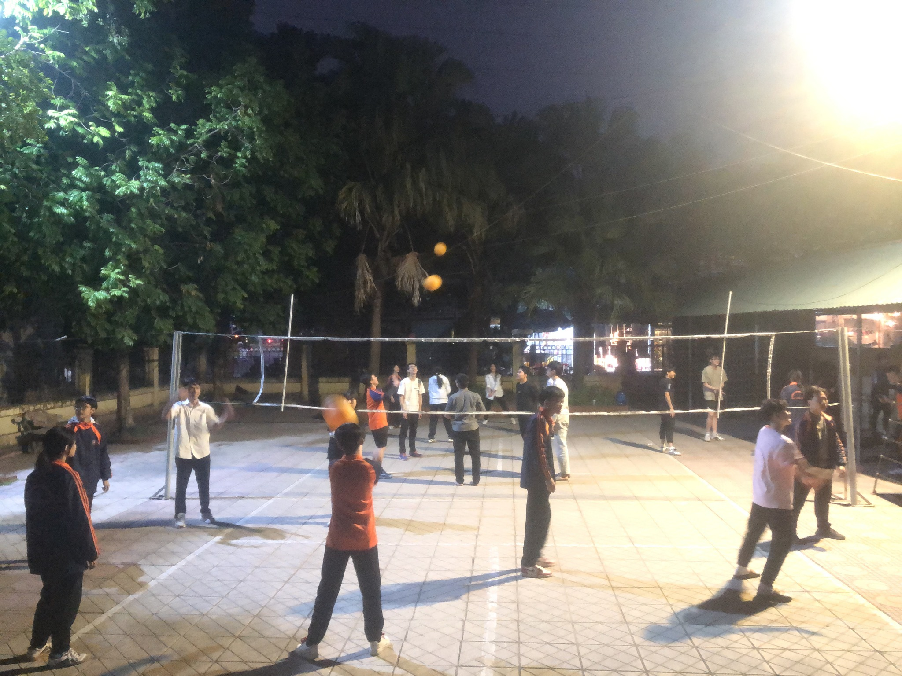

Hoạt động bùng nổ
Cháy hết mình
giành những giải thưởng
|  |
Đá cầu là một môn thể thao truyền thống của Việt Nam, tương tự như bóng đá nhưng thay vì dùng chân để đá một quả bóng, người chơi sử dụng một vật gọi là "cầu" (hoặc "đá cầu") được làm từ các sợi dây, có thể là sợi cước hoặc sợi nilon, với hình dạng giống như một quả cầu nhỏ. Mục tiêu của môn này là đá cầu sao cho nó không rơi xuống đất, đồng thời tránh để đối phương đỡ được. Có hai kiểu đá cầu phổ biến: Đá cầu đôi: Hai người chơi đứng đối diện nhau và đá cầu qua lại. Đá cầu đơn: Một người chơi sẽ đá cầu một mình, thường là trong những trận đấu thi đấu cá nhân. Môn thể thao này đòi hỏi người chơi có sự linh hoạt, khéo léo và kỹ năng phối hợp giữa chân và mắt, tương tự như các môn thể thao đá khác. Ngoài Việt Nam, đá cầu cũng khá phổ biến ở một số quốc gia khác như Campuchia, Thái Lan và Malaysia.
|  |
Bóng rổ là một môn thể thao đồng đội rất phổ biến trên toàn thế giới, đặc biệt là ở Mỹ, nơi mà NBA (National Basketball Association) là giải đấu chuyên nghiệp hàng đầu. Môn thể thao này được chơi giữa hai đội, mỗi đội có 5 người chơi, với mục tiêu chính là ghi điểm bằng cách ném bóng vào rổ của đối phương. Rổ bóng rổ được treo ở độ cao 3,05 mét (10 feet) và có đường kính 45 cm. Các quy tắc cơ bản: Bắt đầu trận đấu: Mỗi trận đấu bắt đầu với một pha bật bóng từ giữa sân (jump ball), sau đó các đội thi đấu để ghi điểm. Ném bóng vào rổ: Để ghi điểm, cầu thủ cần ném bóng vào rổ của đối phương. Một cú ném thành công từ trong vòng 7,24 mét (23 feet 9 inch) sẽ được tính là 2 điểm, trong khi ném từ ngoài vòng 3 điểm (còn gọi là "vòng 3 điểm") sẽ được tính là 3 điểm. Thời gian: Trận đấu được chia thành các hiệp, mỗi hiệp thường kéo dài 12 phút đối với các giải đấu chuyên nghiệp. Thời gian trận đấu có thể thay đổi tùy theo giải đấu. Các pha phạm lỗi: Khi một cầu thủ vi phạm quy tắc (chạy không bóng, phạm lỗi khi phòng thủ), đội đối phương sẽ có cơ hội ghi điểm từ các quả ném phạt. Các kỹ năng trong bóng rổ: Ném bóng: Một trong những kỹ năng quan trọng, bao gồm ném phạt, ném 3 điểm và ném vào rổ khi di chuyển. Phong cách phòng thủ: Cầu thủ cần có khả năng ngăn chặn đối phương ném bóng vào rổ, có thể bằng cách chắn bóng hoặc tạo áp lực. Di chuyển nhanh: Bóng rổ yêu cầu cầu thủ phải di chuyển linh hoạt trên sân để tìm cơ hội tấn công và phòng thủ hiệu quả. Chuyền bóng: Chuyền bóng nhanh và chính xác là kỹ năng quan trọng để giúp đội bóng tấn công tốt hơn. Bóng rổ không chỉ là môn thể thao mà còn là một phần văn hóa tại nhiều quốc gia, với những cầu thủ nổi tiếng như Michael Jordan, LeBron James, Kobe Bryant đã trở thành huyền thoại.
|  |
Bóng chuyền là một môn thể thao đồng đội rất phổ biến và hấp dẫn, được chơi trên một sân có chiều dài 18m và chiều rộng 9m, chia thành hai phần bằng một lưới ở giữa. Mỗi đội có 6 cầu thủ, và mục tiêu của môn thể thao này là để đưa bóng qua lưới vào phần sân đối phương, đồng thời ngăn không cho đối phương làm điều tương tự. Các quy tắc cơ bản: Cách chơi: Mỗi đội sẽ có ba lần chạm bóng để đưa bóng qua lưới. Các cầu thủ phải chuyền, đập, hoặc chắn bóng sao cho bóng không chạm đất ở phần sân của mình và không vi phạm các lỗi. Chuyền bóng: Các cầu thủ có thể dùng tay, cánh tay hoặc các bộ phận khác của cơ thể để chuyền bóng, nhưng không được chạm bóng hai lần liên tiếp. Lỗi và phạm quy: Một số lỗi phổ biến bao gồm chạm lưới, vi phạm đường biên, chạm bóng hai lần liên tiếp, hoặc không thể kiểm soát bóng. Điểm số: Để giành chiến thắng trong một hiệp đấu, đội cần đạt được 25 điểm và dẫn trước ít nhất 2 điểm. Một trận đấu bóng chuyền thường gồm 3 hoặc 5 hiệp. Đội thắng 3 hiệp đầu tiên sẽ giành chiến thắng chung cuộc. Các kỹ năng trong bóng chuyền: Đập bóng (Spike): Đây là kỹ năng tấn công mạnh mẽ, khi cầu thủ nhảy lên và đập bóng xuống phần sân đối phương, gây khó khăn cho đội bạn trong việc phòng thủ. Chuyền bóng (Pass): Chuyền bóng chính xác và linh hoạt là yếu tố quan trọng để tạo cơ hội tấn công cho đồng đội. Chắn bóng (Block): Cầu thủ phải có khả năng chắn bóng khi đối phương thực hiện cú đập mạnh, ngăn bóng không rơi xuống sân mình. Phòng thủ: Ngoài việc chắn bóng, các cầu thủ còn cần di chuyển nhanh để sẵn sàng đỡ bóng khi đối phương tấn công. Bóng chuyền có thể chơi trong nhà hoặc ngoài trời, và có thể chơi ở các giải đấu chuyên nghiệp, giải đấu quốc gia hay cũng có thể chơi ở các giải phong trào. Môn thể thao này rất phù hợp để rèn luyện thể lực, sự phối hợp đồng đội và phản xạ nhanh.